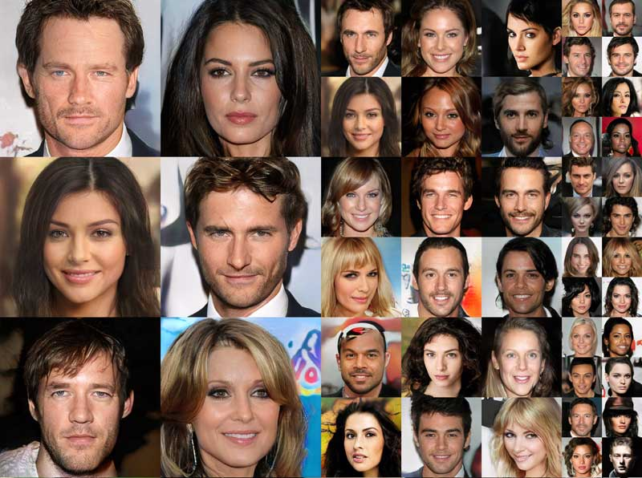
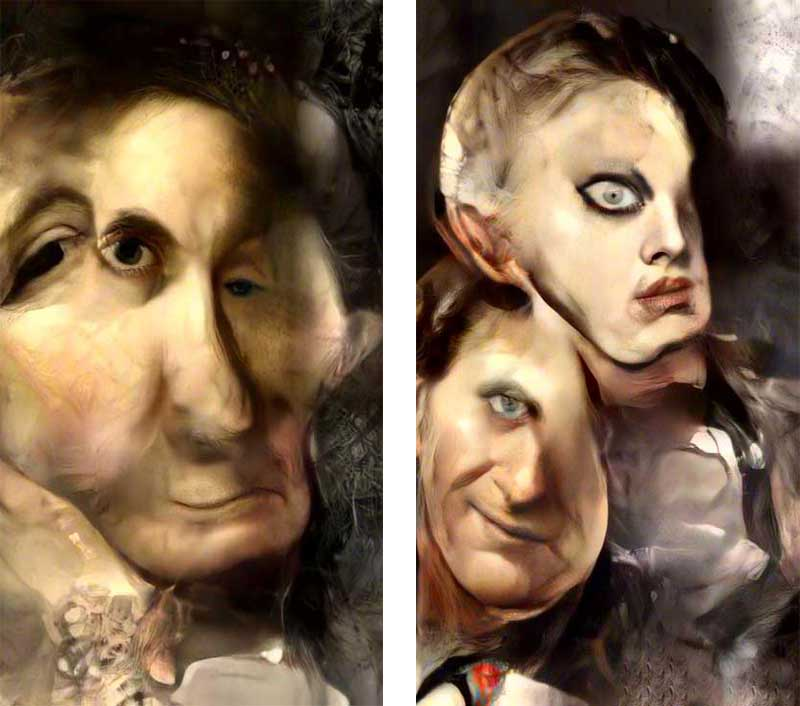
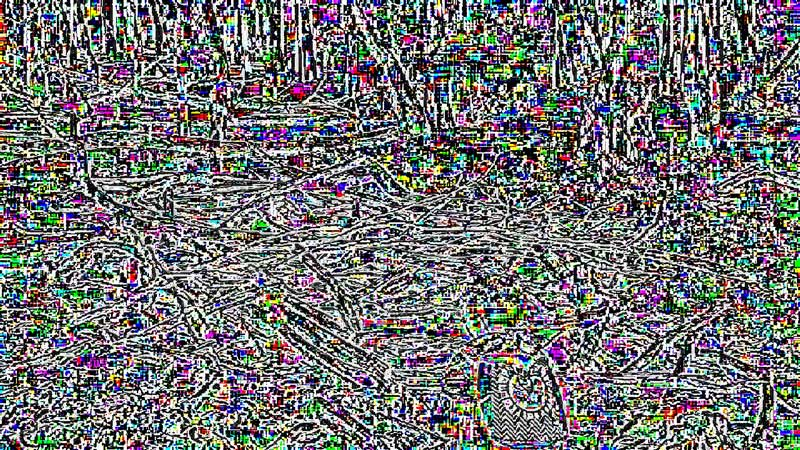

Artificial Imagination: Deepfakes from latent space
| Date: | 2018 |
| Format: | Journal article |
| Index: | writing |
A video puppet created by Jordan Peele and BuzzFeed in early 2018 to raise public awareness and media literacy.
Artificial Imagination: Deepfakes from latent space
By now, you’ve probably witnessed a deepfake: a synthetic image or video produced by machine learning processes that appears to be real. These images have naturally led to some concern that elections might be swung or geopolitical rifts opened by some believable, but false evidence. A confession – a smoking gun –manufactured to manipulate public sentiment and destabilise democracies. So far, deepfakes have been as benign as a missile test. They are typically framed by the story of their own production, serving both to showcase the power of artificial intelligence and as a warning about the images to come.
Opacity and concealment colour the language around AI. Terms like machine learning and neural networks are already obscure, while others like black boxes, deep learning, and latent spaces seem to embrace hermeticism. A neural network is trained to do something. It sits between some input – an image, maybe –and some output, such as whether or not a person, or even a particular person, is in that image. Rather than a human coding an algorithm by providing some rules of “what to look for,” essentially putting theory before practice, the neural network is an algorithmic machine that learns through practice. It improves itself by taking guesses, making mistakes, and trying to adapt accordingly.
When a neural network is trained on millions of images, those images must first be converted into data. Not pixels, but even more compressed features, which can be common visual patterns like a mass of light or stripes or even the shape of a moustache. The accumulation of these features are more than just a kind of compression, they define an ur-image, a latent space, almost like DNA, that can be projected back out, through a neural network model, into physical and visual space as a new image. The deepfake is a creature of this new mode of virtual reality.
The deepfake also works in reverse. In 2013, a paper called “Intriguing Properties of Neural Networks” showed that it was possible to show an image of a bus to a neural network and make it recognise that image as an ostrich.1 This was accomplished by subtly manipulating the pixels of the image, adding imperceptible visual noise, such that the human eye could see no difference, whereas the algorithm was blinded by its certainty that the image was, in fact, something else entirely. These kinds of images were called by the authors “adversarial images,” conjuring up fears and fantasies of attacking surveillance algorithms with adversarial makeup or deceiving self‑driving car algorithms with adversarial stop signs.
But in true dialectic form, a follow-up paper proposed that this adversarial tactic could be internalised by the neural network to inoculate itself to these deceptions. The 2014 paper proposed a new neural network architecture called Generative Adversarial Networks (GANs) which were described in an evocative, dramatic way as two networks pitted against one another.2 On one side were the criminals, producing counterfeit money, while on the other were the police, who try to determine whether money is real or fake. The police become more discerning as the counterfeits improve while the counterfeiters must constantly do better to fool the police. At a certain point, neither can advance any further and the authentic money is impossible to tell apart from the counterfeit.
Police and crime merge, but not in the usual corrupt way. Instead, corruption becomes a part of the process. The machine exploits this internalised corruption as realism to produce new images, which seem unconstructed to the human eye. As much as they appear to have come from a camera, these images are without referent. They are fakes, like the portrait photographs of virtual celebrities. Smiling, believable, almost familiar, they could be extras in a sitcom you haven’t got around to watching. They are generic in the way that celebrity is generic: perpetually repeating itself with minor variation.

Detail from a composite of synthetic celebrities published in Tero Karras, Timo Aila, Samuli Laine and Jaakko Lehtinen. “Progressive Growing of GANs for Improved Quality, Stability, and Variation,” Preprint ArXiv: 1710.10196, 2017. Courtesy NVIDIA Corporation
The thing about GANs, or generative neural networks more generally, is that the realistic new images they produce are contained within the possibility space of the test data they are trained on, effectively its world. For the celebrities, this possibility space would be the CelebA dataset, which is comprised of more than 200,000 images of 10,000 different people, each of which has 40 different features, like “bangs,” “double chin,” and “bushy eyebrows.” The possibility space is not just these 200,000 images, but all possible images that are plausibly members of that set. Again, test data – basically, a large number of examples to learn from – is essential.
Cultural biases embedded within the test data manifest themselves in the performance of neural networks, a phenomenon illustrated by the sameness of the fake celebrities. And it is the availability of test data, perhaps more than computing power or algorithms, that is often a bottleneck in machine learning because of the significant manual labour required. One real-world innovation of GANs is to automate the production of test data, such that to see an image produced by a GAN is to see two otherwise imperceptible things: the obverse of the surveillance and monitoring algorithms everywhere and the changing composition of labour within post-industrial capitalism.
But if this is a new form of virtual reality, then where is the sense of immersion that typically characterises VR experiences, whether in a headset or media archeologically speaking, in a panorama? Immersion not only envelops the viewer’s visual field, but often also allows a mobility of perspective. The images I’ve been discussed so far, taken at face value, are not visually immersive. They have frames. I can turn away from them. But I can’t turn away from all images forever. At the moment, generative images are a spectacle. They call attention to themselves for their technical virtuosity. But as neural networks get integrated into cameras and consumer software, so too will the generative capacity of the algorithms, increasing resolution, fixing smiles, changing colours, adapting poses, adding glasses, trimming facial hair, subtracting people, correcting the sky, and so on. If generative images are immersive it is because they take place in the world around us. They virtualise reality.
Another characteristic of VR is the disappearance of the computer. All of the requisite gear is “backstage,” necessary for but excluded from the immersive image. A successful “virtual reality effect”3 requires the visual suppression of its own technological support, in much the same way that naturalistic special effects obscure any residue of their production. Generative images break free of a specialised display apparatus, appearing not in some kind of purpose-built amusement park, but in the wild. They are still dependent on the orchestration of advanced capital, but the computers that produce these images are often invisible, remote, and rented by the second from an Amazon or Google data centre.
In the “redoubling” of the world as data, made possible by the enveloping, largely invisible superstructure of sensors, smart devices, networks and data centres, Mark Andrejevic identifies an emerging logic of “framelessness.”4 Although this framelessness refers to a totalising information collection that demands correspondingly immersive representation (through VR, for instance) we only need to grab hold of the VR headset to feel how tangible the frame still is. But in the same way that we no longer need to “jack in,” like Case in Neuromancer – as Andrejevic notes, “the contemporary technological imaginary collapses cyberspace into physical space”5 – we should be on the lookout for encounters with virtual reality outside of the frame of the headset.
The GAN stages a virtual reality internally within its own structure, a game theoretical environment with accelerated scenarios of production and reception loosely shaping data into acceptable patterns made image. And when these pattern images are let loose into our world, they bring something of that game with them. They have no referent, they represent no thing in particular. And yet, looking at an image of a generated portrait, it convincingly represents a face, some person. But, consciously, we know that this can’t be. This image does not index a person or a moment in time. And yet, again, the dataset from which the image was generated is replete with indexical photographs that have, projected through the GAN, produced this image. Following Gilles Deleuze’s proposition that, in control societies, individuals have become dividuals,6 we could add that the indexical becomes dexical.
These dexicalities, these externalised virtualities of the GAN, confront us as both familiar and alien, banal and strange. If they index anything then it is the algorithms themselves, entangled as they are in virtualised computers spread across physical hardware. The dexical pattern‑image is metonymically related to the generalised weirdness of big data‑based algorithmic culture: a car that drives itself, a cargo ship going in circles for weeks in search of profitability, a books that costs $23,698,655.93, appliances eavesdropping on you, robo-debt, flash crashes, the car crashes.
Causality was the dominant logic of industrial societies, according to Vilém Flusser, underpinning the scientific drive of everything from biology to psychology. But in our post-industrial, information-driven world, he argues that chance rules. This might seem counterintuitive, but chance is not mere randomness. No, chance refers to the unrelenting realisation of a program’s latent possibilities. With enough time, enough iterations, enough rolls of the dice, every potential outcome, even the least probable, the most weird, will come to pass. GANs provide a vivid example of this axiom, accelerating the programs latent in some data reality in order to explore regions of the possibility – space that have not yet become actual. In other words, the GAN retroactively generates the program for its world and subsequently realises the virtualities contained within it – new celebrities, for instance. The images are not simply fake – whether that means a modelled, rendered construction or a fraudulent imitation – but they are practically real, as if a genuine photograph of an actual person genetically engineered from celebrity DNA. On the surface of the image, there is no difference from the real thing.
There is a increasing amount of artwork made from GANs, which tends not to be overinvested in realism (even if it is often preoccupied with resolution, eliminating artefacts, and other finishings), instead leaning toward visually arresting forms that read as distortions of the familiar. They mine the recesses of latent space. The images that Mario Klingemann derives from datasets of paintings by old masters, for example, are grotesque, Francis Bacon‑inspired heads, bodies, and parts, as if the algorithm has unearthed something repressed in the paintings-as-data. In practice, it is more the analytical dimension of the GAN is most likely experienced in everyday life, whereas the synthetic, generative dimension explored in these artworks and scientific papers is primarily active during training, when the machine learns.

Mario Klingemann, 6956/79530 Self Portraits, 2018; 8795/79530 Self Portraits, 2018, composition of multiple GANS. Courtesy the artist
In Pliny the Elder’s famous account of the competition between artist adversaries, Zeuxis and Parrhasius, each painter sought to produce a more realistic painting than the other. Zeuxis’ depiction of grapes was so convincing that birds, attempting to eat the fruit, were fooled. When Zeuxis requested that the curtain in front of Parrhasius’ painting be pulled open so that it could be judged, he realised that he had been tricked, for the curtain was the painting. In this story, we see the presence of both the non-human (the birds) and the human (the artist) critic, where finally the ultimate authority resides with the latter. With photorealistic fakes, we are living through a reversal of this authority in which the human eye must finally defer to computational devices for determining authenticity, consistency, and provenance.
Unsurprisingly, adversarial images are beginning to proliferate in our cultural Zeitgeist of pronounced scepticism, which I previously discussed in “Fake news, artificial intelligence and data visualisation.”7 It is difficult to trust a photograph any more than a hand-drawn image. We are constantly compelled to interrogate the entire chain of production of an image, a way of seeing that increasingly depends on algorithmic evaluation to discern imperceptible manipulation or cryptography or even blockchain to determine and trace an image’s provenance. You will no doubt see that relying on computation propels a cycle forward as each of these systems is inevitably gamed, requiring further monitoring, and deepening our dependency on – and, it might be said, our affective connection to – the machine. In the alternative tendency pulling on this epistemological knot, the viewer falls back onto their own intuition, such that instinct and emotion are given precedence over what is there.
Saya, a “virtual human” created by designers Teruyuki and Yuka Ishikawa using Quixel and Maya, easily fools the eye. And there are virtual Instagram models, like Bermuda and Lil Miquela, who emerge from a logic of digital rendering and superimposition. They’re not as realistic as Saya, their faces and mannequin-like poses don’t quite fit, but part of the appeal seems to be going along with the suspension of disbelief. Are they real? Well, no. But they do have followers, music and modeling contracts. The water is further muddied when it comes to flesh‑based Instagram models (some of whom will, occasionally, pose in images with the virtual models) in environs so constructed, they’re practically virtual spaces. On Twitter, abandoned accounts are hacked, sold, and repurposed, sometimes bringing the dead back to life as a pro‑Trump white nationalist. Bodies and profiles become avatars for offstage directors.
The ease of using the body-image as puppet has become clear with the deepfakes that, for example, apply a celebrity’s face to an actor in a porn scene or manufacture a new speech from Barak Obama. Deepfakes don’t require creating a virtual model from the ground up, applying textures and lighting, but rather learning patterns in data and then generating more of that data according to those patterns. The image becomes plastic without being plasticky. This process is different from yet encompasses the fact that it might be Photoshopped or it might be rendered. It is a synthetic image.
If I return to the myth of Zeuxis and Parrhasius, it is not to dwell on the fake or the counterfeit, but rather to emphasise Parrhasius’ innovation, which was to jump frames. The history of trompe l’oeil painting is a history of breaking the frame, often depicting such a transgression as part of the image. Parrhasius went a step further, finding a way to game the contest as it was understood at the time. And we might imagine more jumps: a counterfeit audience, a staged contest, and so on up until absolutely everything is a constructed trick. Although this succession of superseding frames quickly transforms into paranoid belief in a conspiracy just outside the perceptible limits of one’s world – an all-encompassing meta-frame – we might alternatively ask whether a simulation can ever break free of its own support. Can it confront its own media format or is it always moving relative to its support, like running backwards on a train? Are our futures constrained by the latent space of our neural models and our data archives?
Mark Fisher, in Ghosts of My Life, discusses the hauntological distinction between the no longer and the not yet,8 explaining that the former is a traumatic drive to repeat that which no longer exists whereas the latter points to something that is imminent, that will eventually happen. Artificial intelligence – that presence that exists partly in reality, but mostly in the collective imagination as a future god – is the not yet that is already here, dissolving the present state of things, realising virtualities and virtualising the real. In spite of the advanced technology, the repressed data memories that GAN brings forth often seem stuck in the no longer, immersed in the possibility space afforded by the data set. Is it possible to go beyond visualising these symptoms, to jump frames and confront or repurpose the image-making machines of the present? Or has our framelessness finally put an end to this kind of move? Is it time to learn to make space in our virtual reality?

Sean Dockray, video still from “Adversarial Uploads”, 2018. These videos uploaded to YouTube are made entirely of visual noise that produces a gap in machine and human perception.
Published
- Dockray, Sean. “Artificial Imagination: Deepfakes from Latent Space.” Artlink 38, no. 4 (December 2018): 66–72.
See also
-
Christian Szegedy, Wojciech Zaremba, Ilya Sutskever, Joan Bruna, Dumitru Erhan, Ian Goodfellow, and Rob Fergus, Figure 5 in “Intriguing Properties of Neural Networks,” ArXiv Preprint ArXiv:1312.6199, 2013. ↩
-
Ian Goodfellow, Jean Pouget‑Abadie, Mehdi Mirza, Bing Xu, David Warde‑Farley, Sherjil Ozair, Aaron Courville, and Yoshua Bengio, “Generative Adversarial Nets,” in Advances in Neural Information Processing Systems, 2014, 2672–80. ↩
-
See Virtual Reality: Definition and Requirements, NASA Advanced Supercomputing Division: https://www.nas.nasa.gov/Software/VWT/vr.html. ↩
-
Mark Andrejevic, “‘Framelessness,’ or the Cultural Logic of Big Data,” in Michael S. Daubs and Vincent R. Manzerolle (eds), Mobile and Ubiquitous Media, Peter Lang US, 2018, doi:10.3726/b13289. ↩
-
Andrejevic, “‘Framelessness,’ or the Cultural Logic of Big Data,” 251. ↩
-
Gilles Deleuze, “Postscript on the Societies of Control,” October 59 (n.d.): pp. 3–7. ↩
-
Sean Dockray, “Fake news, artificial intelligence and data visualisation”, Artlink 37:1, pp. 12–17: https://www.artlink.com.au/articles/4571/fake-news-artificial-intelligence-and-data-visuali/. ↩
-
These terms, including “hauntology,” come from Fisher’s reading of Martin Hägglund’s Radical Atheism: Derrida and the Time of Life in Writings on Depression, Hauntology and Lost Futures, Zero Books, 2014. ↩